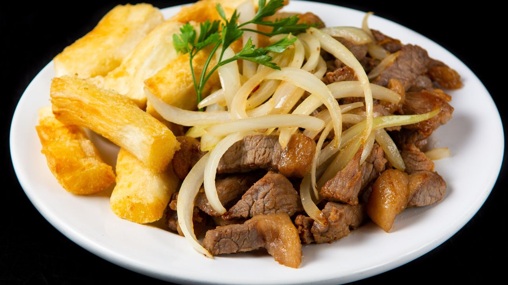

Ingredientes:
- 500g de carne de sol desfiada
- 1 kg de macaxeira (aipim) cozida
- 1 cebola picada
- 2 dentes de alho picados
- Coentro a gosto
- Sal a gosto
Modo de Preparo:
Cozinhe a macaxeira até ficar macia. Em uma panela, refogue a carne de sol com cebola e alho. Misture com a macaxeira cozida e adicione coentro e sal a gosto. Sirva quente com arroz.
